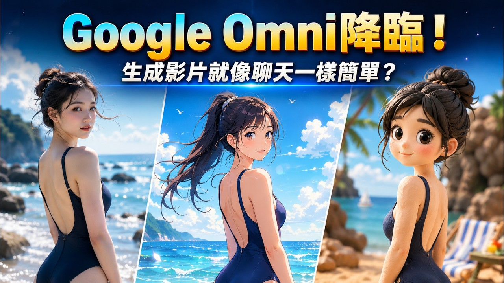

YouTube｜AI 視覺實驗室：Google Omni 與 Flow 對話式影片生成教學
這支影片來自 YouTube 頻道「AI 視覺實驗室」，標題為「Google Omni降臨，生成影片就像聊天？對話式影片修改！無痛替換影片背景、內容，創建虛擬分身！有可能贏過Seedance 2.0嗎？」。影片長度約 11 分 47 秒，發布於 2026-06-08。擷取時 YouTube transcript 顯示「Transcripts are disabled for this video」，因此本文不是逐字稿摘要，而是依 YouTube oEmbed、影片頁 metadata / description、縮圖 OCR 與 Google 官方來源整理。

影片公開資訊
影片描述的核心主張是：Google 最新推出的 Omni / Gemini Omni Flash 讓 AI 影片生成不再是「不滿意就整段重來」，而是可以用自然語言對已生成或已上傳影片進行連續修改。影片預計介紹 Omni 是什麼、可以在哪裡使用，以及它如何改變日常影片創作。
YouTube 頁面可見資料：
- 影片 ID：`MnWWS1WbafQ`
- 頻道：AI 視覺實驗室
- 類別：People & Blogs
- 長度：707 秒
- 發布時間：2026-06-08
- 擷取時瀏覽數約 28,664、喜歡數約 745；互動數會隨時間變動。
縮圖 / OCR 描述
縮圖大字寫：「Google Omni降臨！」與「生成影片就像聊天一樣簡單？」。畫面分成三格：左側是海邊寫實女性人物，中間是動漫風同一類海灘人物，右側是黏土 / Q 版 3D 風人物，呼應影片描述中「用一句話把畫面切成寫實、動漫、可愛黏土風」的風格轉換主題。
影片描述整理：五個教學重點
影片描述列出觀眾會學到：
- Gemini App 與 Google Flow 的差異，以及哪裡可使用 Google Omni。
- 文字生影片、參考圖風格化、打造 AI 個人數位分身的三步上手流程。
- 將真實影片導入 Omni / Flow，修改影片環境與細節。
- 用線條與箭頭控制生成無人機鏡頭運動軌跡。
- 透過智能體與聯網搜尋，讓影片中的花卉從第 3 秒開始出現 3D 可愛手繪風標籤貼紙，並以繁體中文標註學名、生長週期與生理特點。
影片提供的範例提示詞
1. 麵包店：文字生影片與對話修改
初始 prompt：陽光明媚的下午，一家溫馨麵包店門面的電影感鏡頭，照片級真實，8K 解析度，自然光影，逼真的物理效果，極致紋理細節。
後續對話修改：將下午場景轉為夜景，點亮店內暖光與路燈，營造電影感夜間氛圍。
風格套用：提供麵包店影片加風格圖片，要求 Omni 將圖片視覺風格套用到剛才生成的影片。
2. 海灘漫步：數位分身與情境修改
先提供數位分身，再加 prompt：這個人穿著沙灘褲、拖鞋、短袖走在空無一人的海灘上，午後陽光，黏土動漫風。
後續對話修改：讓身後沙灘出現大批人群；再讓天氣突然下大雨。
3. 空拍運鏡：用線條與箭頭控制鏡頭
流程是先提供一張空拍照，在圖上畫箭頭，再給 prompt：相機跟隨參考圖像中的箭頭移動；這是一個連續且不中斷的鏡頭；請從圖像中移除箭頭；影片是從跟隨線條的無人機 POV 拍攝，並始終朝向無人機飛行方向。
4. 車內 POV：替換窗外環境
先提供一段車內往外拍的影片，再找一張環境照片，例如 Google Maps 街景截圖，兩個素材都給 Omni。Prompt 要求：從車內透過前擋風玻璃向外看的 POV；汽車正在圖像中截取的路段行駛；一個連續鏡頭；保持相同儀表板與原本汽車內裝。
5. 花卉影片：聯網搜尋與 3D 標籤特效
先提供花卉影片給 Omni / Google Flow，開啟智能體模式，要求先聯網搜尋並識別花卉種類；從影片第 3 秒開始，動態浮現 3D 可愛手繪風標籤貼紙；標籤需鎖定花瓣、花蕊、莖等部位，使用柔和粉彩、圓潤字體與花草插圖，並以繁體中文列出學名、生長週期小秘密與生理特點；文字要有 3D 空間感知，隨鏡頭運鏡產生透視偏移與穩定追蹤。
Google 官方來源查核
Google 官方部落格「Introducing Gemini Omni」描述 Gemini Omni 允許從任何輸入生成內容，並以 conversational language 自然編輯。Google 表示第一個 Omni family 模型是 Gemini Omni Flash，正在 rollout 到 Gemini app、Google Flow 與 YouTube Shorts；它支援透過對話編輯影片，每個指令都可建立在前一個結果上，讓角色一致性、物理與場景記憶能被保留。
Google AI for Developers 的「Generate and edit videos with Gemini Omni Flash」文件確認 Gemini Omni 的核心能力包括：
- Native multimodality：同時處理 text、image、audio、video。
- Conversational editing：透過 Interactions API 讓使用者以自然語言反覆修改影片，保留不想改動的部分。
- World knowledge：結合物理理解與 Gemini 的歷史、科學、文化脈絡知識。
- Text-to-video generation：可從文字 prompt 生成有 audio 的影片；建議 prompt 包含場景、鏡頭運動、燈光與 mood 等細節。
Google Flow 官方頁則將 Flow 定位為 AI Creative Studio for Video, Images & Custom Tools，並寫明 Gemini Omni 可從真實或生成的 input reference 建立與編輯影片，是 world understanding、multimodality 與 conversational editing 的進展。同頁也列出 Veo 3.1，描述為具 expanded creative controls、native audio 與高品質影片能力的模型。
實務判讀
這支影片最有保存價值的地方，不只是「介紹新模型」，而是把 Gemini Omni / Flow 的對話式影片工作法整理成幾個可複製的 prompt pattern：
- 先生成，再逐步修正時間、天氣、燈光、群眾與風格。
- 使用 reference image 做風格轉換，而不是每次重寫 prompt。
- 將本人照片或 avatar 作為角色 reference，測試數位分身與情境重構。
- 在圖片上畫路徑或箭頭，讓模型讀取視覺控制訊號來生成運鏡。
- 將外部搜尋 / agentic context 與影片物件追蹤結合，產出教育標籤或解說型影片。
對創作者而言，這代表 AI 影片工具開始從「單次抽卡生成」往「可對話修片」前進。若要應用在課程或內容製作，可先用短片段驗證角色一致性、物件保留、鏡頭穩定、字幕/標籤追蹤與成本，再決定是否進入長片或系列化流程。
補充邊界
- 本片字幕關閉，本文依 metadata 與影片描述整理，未取得逐字稿。
- 影片提到與 Seedance 2.0 的比較屬影片標題中的提問；本文未進行模型對跑或品質 benchmark，因此不下「誰勝過誰」結論。
- Google Omni / Gemini Omni Flash 的可用性、國家、帳號層級、Flow credits 與 API quota 可能變動，實際以 Gemini App、Google Flow 與 Gemini API 當下介面為準。
- Google Maps / 街景截圖、人物肖像與數位分身使用仍涉及素材授權、肖像同意與平台政策；教學 prompt 不等於可直接商用。